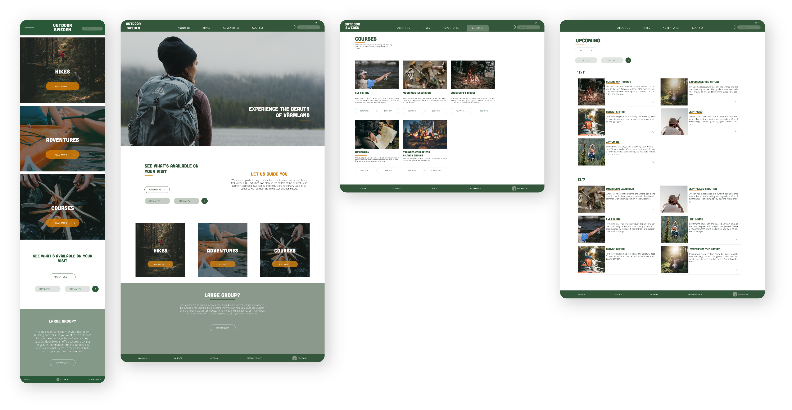
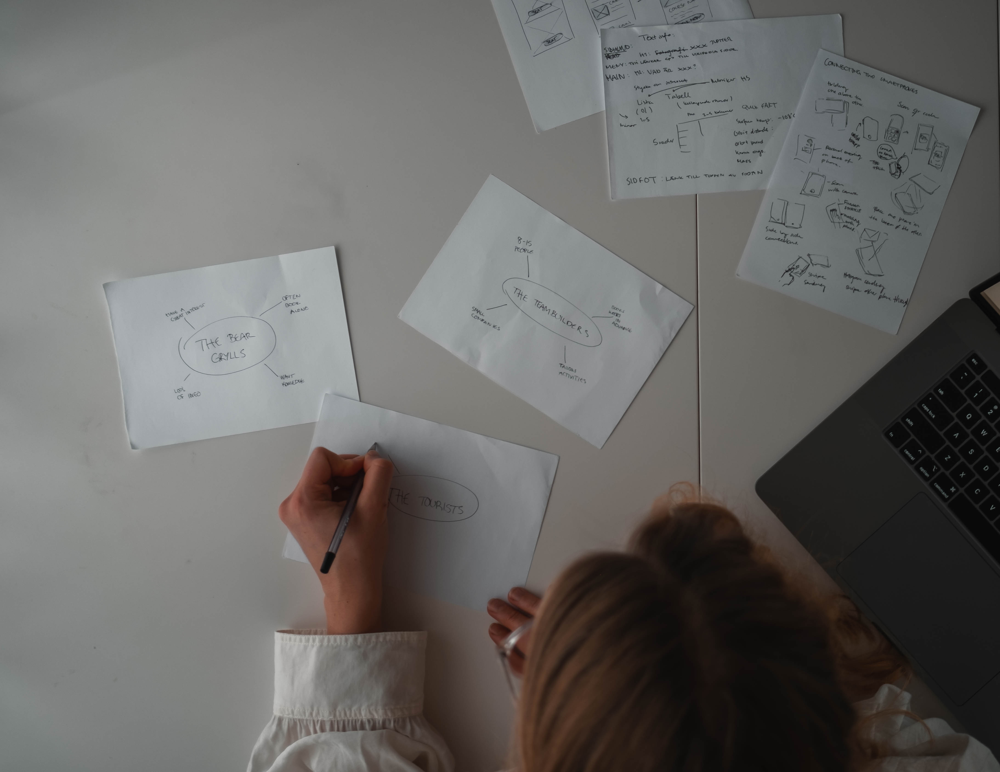
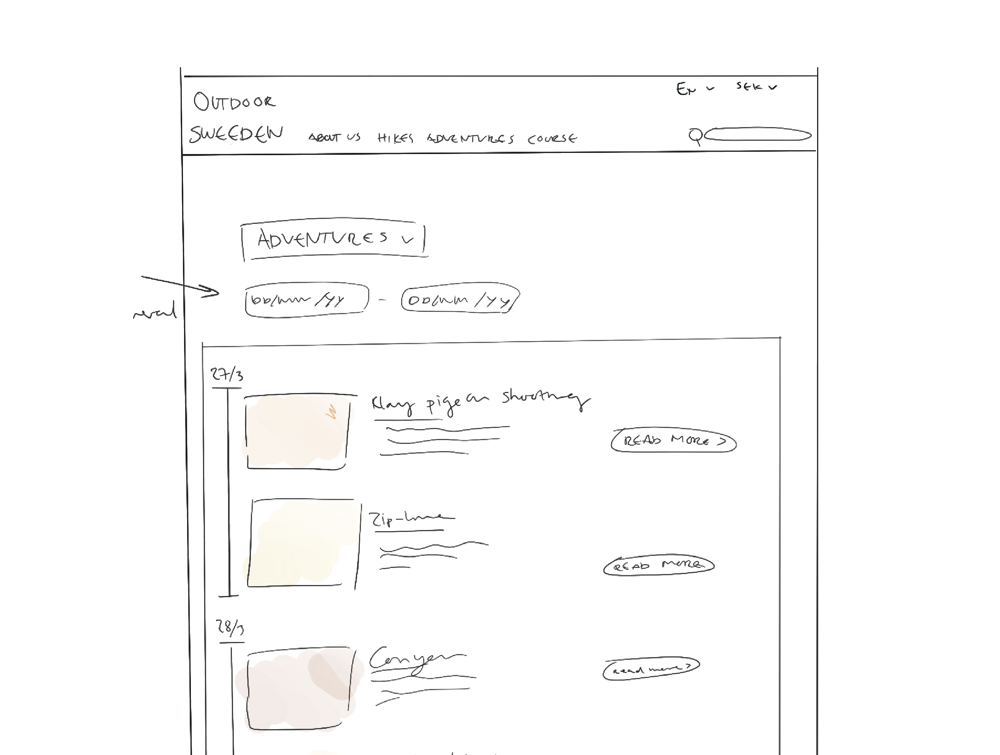
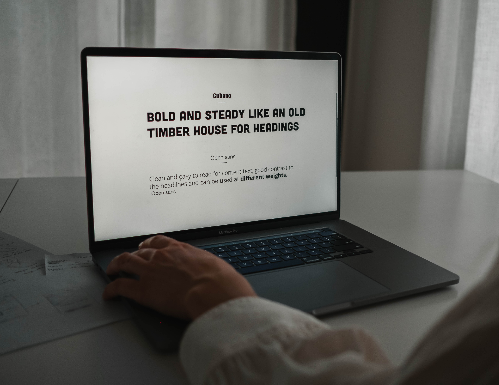
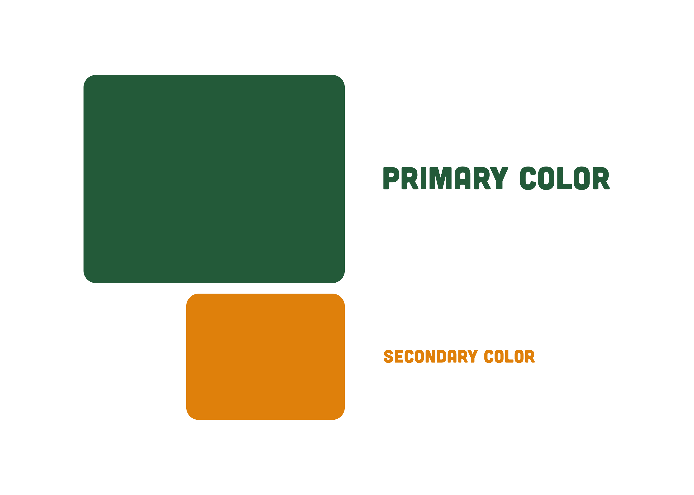

WEBSITE CONCEPT
A concept designed for a small outdoor company.
Anna Jarebro
Webdesign 7,5hp
University of Uppsala

The users
Three target users were identified and used to evaluate the design from different perspectives throughout the process.


Wireframes
The fonts
When choosing fonts, the goal was to enhance the outdoor vibe and still make it clean and readable.


The colors
By using dark shades of green and orange the colours get a more worn look, like that outdoor jacket that you inherited from your grandpa that’s still going strong.